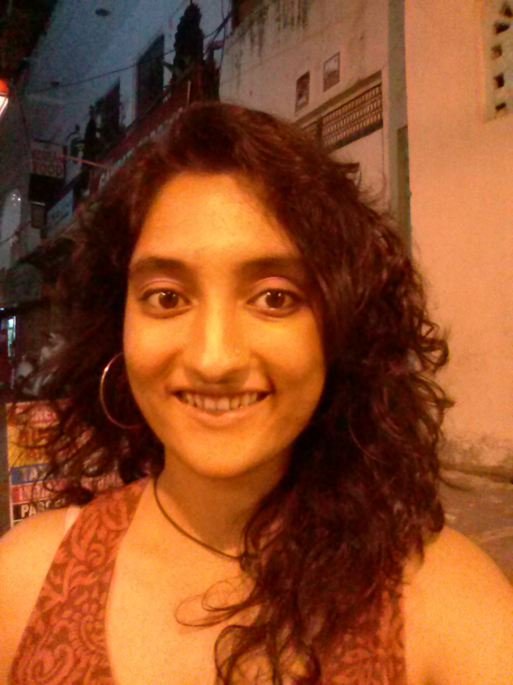

Farm Updates
25 September 2015 | News | Posted by Parul Sood.
Our farm team includes:
Babli ji, Rakesh, Himanshu ji, Ram Singh ji, Kishan Singh ji, Mohammad, Sumant and Mansingh Ji
The monsoons have finally decided to say goodbye and... Hello sun! We forgot that you were even there hiding behind the clouds! We had 1330 mm of rainfall this year. The rains may have been depressing for some of us, but good for our farm.
Babli ji says, “The rains were very good for the crops we planted this year and we had a lot of healthy produce this season.
The farm team meets weekly at the Haiku shed. It has been proposed that anyone can join the farm team meetings on the condition that they get their hands into the soil to keep up with the Sambhaavnaa open culture and encourage shram daan on the farm.The farm produce will be divided equally amongst the volunteers, fellows, and staff.
We had a good vegetable produce this year!
2 quintals bhindi, 25 kilo coriander, 10 kgs green leafy veggies, 3 quintals French beans. 50 kgs cucumbers and many others like Aubergines, Onions, Garlic, Turmeric, etc. Pears and Plums were harvested and the kitchen staff, with support from Deepa and Himanshu ji, made jam for the mess.
PLANTATION THIS SEASON
90 + 150 trees have been planted, e.g., nimbu, santra, malta, litchi, etc. More than100 baas (bamboo) and over 70 flowering plants have also been planted. Planning to begin for the upcoming season for new vegetables to be planted in 10-15 days, the farm team will inform everyone of the seeds and other requirements.
RECENT POSTS0
Post Heading
 12 Jun 2012
Location
Mauris non velit eu lectusgravida facilisis.
Post Heading
12 Jun 2012
Location
Mauris non velit eu lectusgravida facilisis.
Post Heading
12 Jun 2012
Location
Mauris non velit eu lectusgravida facilisis.